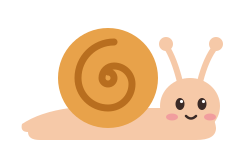

hachikuji
An IDE-style completion popup for zsh. It draws with the zsh line editor, so zsh stays in charge of your terminal, and it uses about 2 MB per shell.
~/project ❯
Type in the terminal. ↑ ↓ move, Tab inserts, Esc closes, Enter runs.
Install
From source, until the first release is out (needs rustup, bun and git):
git clone https://github.com/glpecile/hachikuji
cd hachikuji && make installAfter the first release, one line, or Homebrew:
curl -fsSL https://github.com/glpecile/hachikuji/releases/latest/download/install.sh | shbrew install glpecile/tap/hachikujiThen add the line it prints to ~/.zshrc, before zsh-syntax-highlighting. Moving from Fig, Kiro CLI or inshellisense? Follow the migration guide.
Keys
- ↑ ↓ ⇧Tab
- Move the selection. With the popup closed, Up and Down walk history.
- Tab
- Insert the item, then open the popup for the next word. With no popup, two Tabs run zsh completion.
- Enter
- Run the line. After you move the selection, insert the item.
- Esc
- Close the popup.
Configure
Every key is optional, in ~/.config/hachikuji/config.toml:
max_rows = 8
border = "rounded" # rounded | square | none
selected = "reverse" # or a palette index from 0 to 15
open = "auto" # "tab": open only when you press Tab
fuzzy = trueThe popup uses only your terminal's 16 colors, so it follows your theme, light or dark.
Small and fast
2.2 MBper shell. inshellisense: 43 MB
11.6 mskey press to popup, p99
1,455Fig specs, in one shared index